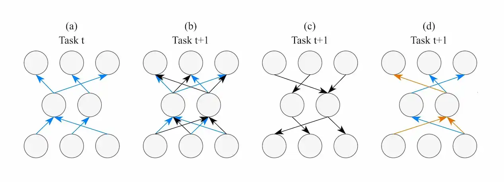
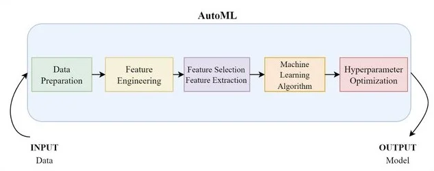
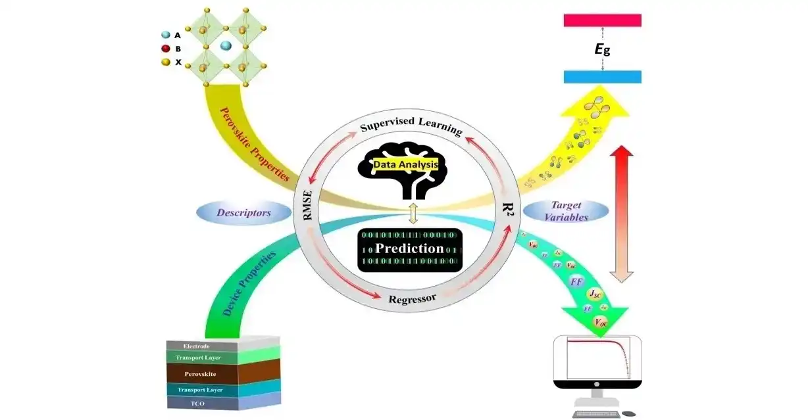
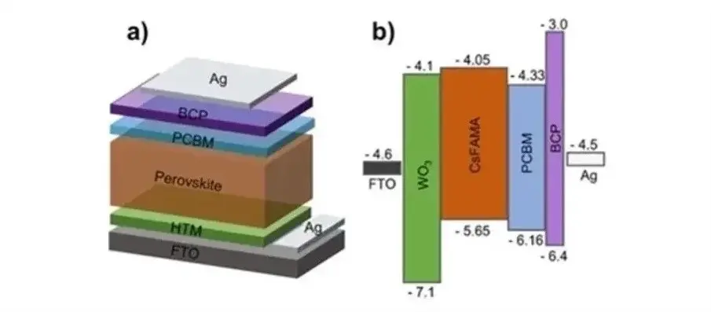
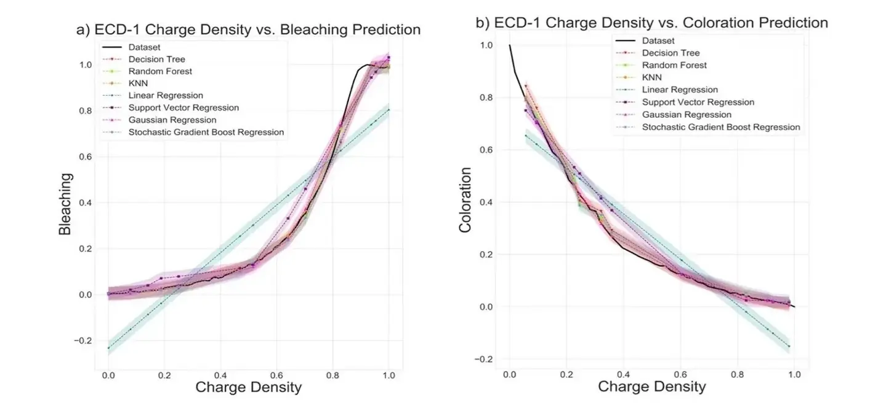

Who am I?
Hi, I am a PhD candidate under the supervision of Joaquin Vanschoren and Decebal Constantin Mocanu at the department of Mathematics and Computer Science in Eindhoven University of Technology, the Netherlands.
My research is dedicated to automated and efficient continual learners for computer vision tasks by leveraging sparsity in networks, data, and labels:
Continually Learning Agents. Mimicking the human ability of learning from new experiences and adapting old knowledge to novel challenges, my research focuses on the learning-forgetting-transfering dynamics of deep neural networks. In particular, I seek to contribute valuable insights by unraveling the intricacies of how neural networks behave when confronted with the sequential execution of multiple tasks in computer vision.
Efficiency and Autonomy in Learning. Striving to move beyond the impracticality of training a dedicated agent for each task, I specialize in designing neural networks that learn automatically and continuously under memory, computation, and label constraints.
Keywords: Continual AI, Efficient AI, AutoML, Computer Vision.
You can reach me via muratonuryildirim@gmail.com or social media accounts.
News
- 11/2023, "Continual Learning with Dynamic Sparse Training: Exploring Algorithms for Effective Model Updates" has been accepted for oral presentation at the CPAL.
- 09/2023, "AdaCL: Adaptive Continual Learning" has been accepted for oral presentation at the CLAI.
- 04/2023, "Condition Monitoring and Predictive Maintenance in Railways" is granted to international patent.
- 10/2022, "Automated Machine Learning Approach in Material Discovery of Hole Selective Layers for Perovskite Solar Cells" has been published in the Energy Technology.
- 11/2021, "Predicting Perovskite Bandgap and Solar Cell Performance with Machine Learning" has been published in the Solar RRL.
- 05/2021, "A Machine Learning Approach for Metal Oxide Based Polymer Composites as Charge Selective Layers in Perovskite Solar Cells" published in the ChemPlusChem.
- 08/2020, "Comparison of Machine Learning Models on Performance of Single- and Dual-Type Electrochromic Devices" has been published in the ACS Omega.
Publications
-

-

- 
-

Automated Machine Learning in Material Discovery of Hole Selective Layers for Perovskite Solar Cells.
Murat Onur Yildirim, Elif Ceren Gok Yildirim, Esin Eren, Peng Huang, Muhammed Haris, Samrana Kazim, Joaquin Vanschoren, Aysegul Uygun Oksuz, Shahzada Ahmad.
In Energy Technology, 2023.
[paper] -

Predicting Perovskite Bandgap and Solar Cell Performance with Machine Learning.
Elif Ceren Gok, Murat Onur Yildirim, Muhammed Haris, Esin Eren, Meenakshi Pegu, Naveen Harindu Hemasiri, Peng Huang, Samrana Kazim, Aysegul Uygun Oksuz, Shahzada Ahmad.
In Solar RRL, 2022.
[paper] -

A Machine Learning Approach for Metal Oxide Based Polymer Composites as Charge Selective Layers in Perovskite Solar Cells.
Murat Onur Yildirim, Elif Ceren Gok, Naveen Harindu Hemasiri, Esin Eren, Samrana Kazim, Aysegul Uygun Oksuz, Shahzada Ahmad.
In ChemPlusChem, 2021.
[paper] -

Comparison of Machine Learning Models on Performance of Single-and Dual-Type Electrochromic Devices.
Elif Ceren Gok, Murat Onur Yildirim, Esin Eren, Aysegul Uygun Oksuz.
In ACS Omega, 2020.
[paper] - See more
Blog Posts
 AdaCL: Adaptive Continual Learning.
[read]
AdaCL: Adaptive Continual Learning.
[read]
See more